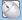

Описание функций
Встроенная удаленная консоль Java позволяет получить доступ к серверу, управлять им дистанционно, устанавливать ОС и устранять сбои в ее работе, а также устанавливать драйверы на сервер.
Посредством встроенной удаленной консоли можно:
- Использовать клавиатуру и мышь локального ПК для дистанционного управления сервером.
- Настроить удаленный доступ сервера к локальному ПК по сети с помощью FDD-диска или DVD-диска. Сервер использует виртуальный FDD-диск или виртуальный DVD-диск аналогично тому, как пользователь использует физическое USB-устройство.
Табл. 1 содержит описание значков на экране KVM.
Значок |
Описание |
|---|---|
|
Закрепление панели инструментов. |
|
Скрытие панели инструментов. |
|
Включение полноэкранного режима отображения рабочего стола сервера. ПРИМЕЧАНИЕ:
|
|
Синхронизация местоположения мыши. ПРИМЕЧАНИЕ:
Данная кнопка доступна только после нажатия кнопки Change Mouse Mode в полноэкранном режиме отображения рабочего стола сервера, и для параметра Mouse Control установлено значение Single Mouse. |
|
Изменение режима мыши. ПРИМЕЧАНИЕ:
Данная кнопка доступна только в полноэкранном режиме отображения рабочего стола сервера, и для параметра Mouse Control установлено значение Single Mouse. |
|
Переключение отображения рабочего стола сервера в режим окна. ПРИМЕЧАНИЕ:
Данная кнопка доступна на панели инструментов только в полноэкранном режиме отображения рабочего стола сервера. |
|
Отображение меню управления энергопотреблением, которое включает следующие операции:
|
|
Видеозапись операций, выполняемых на сервере. ПРИМЕЧАНИЕ:
Обратите внимание, что после включения функции видеозаписи может быть записана конфиденциальная служебная информация во время видеозаписи. |
 |
Управление мышью сервера. К операциям управления относятся следующие операции:
Настройки по умолчанию: Ускорение мыши ПРИМЕЧАНИЕ:
|
|
Выбор и использование виртуального DVD-диска. ПРИМЕЧАНИЕ:
Виртуальный DVD-диск и виртуальный FDD-диск являются составными устройствами. Когда к серверу подключен виртуальный DVD-диск, сервер также идентифицирует виртуальный FDD-диск без носителя. Вы можете использовать виртуальный FDD-диск, следуя обычной процедуре. |
|
Выбор и использование виртуального дисковода гибких дисков. ПРИМЕЧАНИЕ:
Виртуальный DVD-диск и виртуальный FDD-диск являются составными устройствами. Когда к серверу подключен виртуальный FDD-диск, сервер также идентифицирует виртуальный DVD-диск без носителя. Вы можете использовать виртуальный DVD-диск, следуя обычной процедуре. |
|
Использование DVD-диска или FDD-диска для создания файла образа. |
|
Вывод на экран или настройка комбинации клавиш. Поддерживаются следующие комбинации клавиш:
ПРИМЕЧАНИЕ:
Комбинации клавиш и их функции различаются в зависимости от операционной системы. Комбинации клавиш и их функции, описанные здесь, предназначены только для Windows. |
|
Синхронизация клавиатуры клиента. По умолчанию BMC автоматически выбирает тип используемой клавиатуры клиента. Если автоматически выбранная клавиатура работает некорректно, пользователь может вручную настроить тип клавиатуры.
|
Четкость изображения |
Настройка четкости изображения рабочего стола сервера. |
|
Статус клавиши Num Lock на клавиатуре сервера. |
|
Статус клавиши Caps Lock на клавиатуре сервера. |
|
Статус клавиши Scroll Lock на клавиатуре сервера. При нажатии Ctrl+S по ошибке после перехода к символьному режиму Linux, экран будет заблокирован. Нажмите Scroll Lock для разблокировки экрана. ПРИМЕЧАНИЕ:
|
|
Вывод на экран справочной информации. |
Примечание: в зависимости от используемой модели сервера значки, отображаемые на экране удаленной виртуальной консоли, и их функции могут отличаться. |
|


Графический интерфейс пользователя (GUI)
Выберите в главном меню Удаленная консоль и нажмите Встроенная удаленная консоль Java (совместная) или Встроенная удаленная консоль Java (приватная).
Откроется экран KVM.
В случае выбора Встроенная удаленная консоль Java (совместная) два пользователя смогут одновременно получить доступ к серверу и выполнять операции. Но данный режим несет определенные риски в плане безопасности, так как пользователи могут видеть операции друг друга.
Табл. 2 содержит описание зон.
Область |
Функция |
|---|---|
Строка заголовка |
В строке заголовка наверху экрана KVM отображается IP-адрес BMC и серийный номер сервера. |
Панель инструментов (в верхней части) |
Панель инструментов содержит значки, которые используются для удаленного управления сервером. |
Рабочий стол сервера (в середине) |
Управление сервером в режиме реального времени с помощью клавиатуры или мыши локального ПК. |
Строка состояния (в нижней части) |
Отображение в режиме реального времени подсказок и рекомендаций по использованию рабочего стола сервера, а также данных соединения между сервером и локальным ПК. |
Процедура
Вывод на экран комбинации клавиш
- На панели инструментов экрана KVM нажмите .
Откроется диалоговое окно с комбинацией клавиш.
- Нажмите комбинацию клавиш.
Сервер выполнит операцию, соответствующую данной комбинации клавиш.
Чтобы настроить необходимую комбинацию клавиш, укажите клавиши в текстовом Пользовательская настройка и нажмите Отправить.
Настройка клавиатуры клиента
На панели инструментов экрана KVM нажмите и выберите нужную клавиатуру.
Подключение DVD-диска
Подключите DVD-диск локального ПК к серверу.
- На панели инструментов экрана KVM нажмите
 .
.
- Выберите CD/DVD.
- На локальном ПК из выпадающего списка выберите букву DVD-диска, например G:.
- Нажмите Подключить.
DVD-диск локального ПК будет подключен к серверу.
Для отключения DVD-диска нажмите Отключить. Затем нажмите Да в открывшемся диалоговом окне Подтверждение.
Загрузка файла образа с локального ПК посредством виртуального DVD-диска
Подключите DVD-диск локального ПК и загрузите с него файл образа на сервер.
- На панели инструментов экрана KVM нажмите
 .
. - Выберите Файл образа.
- Нажмите Обзор.
Отобразится диалоговое окно Открыть.
- Выберите файл образа на локальном ПК и нажмите Открыть.
- Нажмите Подключить.
После этого произойдет подключение виртуального DVD-диска к серверу и файл образа будет успешно загружен.
- Для загрузки другого файла образа нажмите Извлечение для смены DVD-диска, а затем выберите другой DVD-диск и нажмите Вставить.
- Для отключения виртуального DVD-диска нажмите Отключить. Затем нажмите Да в диалоговом окне Подтверждение.
Подключение виртуального FDD-диска
Подключите FDD-диск локального ПК к серверу.
- На панели инструментов экрана KVM нажмите .
- Выберите Дискета.
- На локальном ПК из выпадающего списка выберите букву FDD-диска, например A:.
- Выберите опцию Защита от записи.
Защита от записи – это опция, которая предотвращает изменение или удаление важных данных. При выборе опции Защита от записи записать данные на FDD-диск невозможно.
- Нажмите Подключить.
FDD-диск будет подключен к серверу.
Для отключения FDD-диска нажмите Отключить. Затем нажмите Да в диалоговом окне Подтверждение.
Загрузка файла образа с локального ПК посредством виртуального FDD-диска
Подключите FDD-диск локального ПК и загрузите с него файл образа на сервер.
- На панели инструментов экрана KVM нажмите
 .
. - Выберите Файл образа.
- Нажмите Обзор.
Отобразится диалоговое окно Открыть.
- Выберите файл образа на локальном ПК и нажмите Открыть.
- Нажмите Подключить.
Файл образа будет успешно загружен на сервер.
- Для загрузки другого файла образа нажмите Извлечение для смены FDD-диска, выберите другой диск и нажмите Вставить.
- Для отключения виртуального FDD-диска нажмите Отключить. Затем нажмите Да в диалоговом окне Подтверждение.
Создание файла образа
Создать файл образа можно с помощью дискеты или DVD-диска на локальном ПК. Созданный файл образа сохранится на локальном ПК.
Перед выполнением данной операции вставьте дискету или DVD-диск в соответствующий дисковод локального ПК.
- На панели инструментов экрана KVM нажмите .
- На локальном ПК из выпадающего списка Диск выберите букву FDD-диска или DVD-диска.
- Нажмите Обзор. Откроется диалоговое окно Сохранить.
- Выберите каталог для сохранения файла образа и введите имя файла в текстовом поле Имя файла.
Посредством DVD-диска можно создавать файлы образа только с расширением *.iso, а посредством FDD-диска — с расширением *.img.
- Нажмите Сохранить.
- Нажмите Создать.
Прогресс показывает ход выполнения операции создания файла образа.
Для отмены создания файла образа нажмите Остановить.
Подключение виртуального каталога
Подключение каталогов локального ПК к серверу требуется для того, чтобы с сервера можно было получать доступ к локальным каталогам в режиме «только для чтения».

Перед подключением каталога скопируйте в него необходимые файлы. После подключения каталога будет невозможно добавить в него файлы или удалить из него файлы.
- На панели инструментов экрана KVM нажмите .
- Выберите опцию Каталог.
- Нажмите Обзор.
Откроется диалоговое окно для выбора локального каталога.
- Выберите каталог и нажмите Открыть.
- Нажмите Подключить.
- Если подключение прошло успешно, виртуальный каталог отобразится в списке ОС сервера. После этого можно копировать файлы из данного каталога.
- Для отключения виртуального каталога нажмите Отключить.
Включение сервера
- На панели инструментов экрана KVM нажмите
 и выберите в меню Включение.
и выберите в меню Включение.Откроется диалоговое окно Подтверждение.
- Нажмите Да.
Сервер будет запущен.
Время запуска серверов разных конфигураций может отличаться.
Выключение сервера
- Перед выключением сервера убедитесь, что работа всех служб остановлена.
- Выберите режим выключения на основании фактических требований. Более подробная информация о режимах выключения сервера приводится в руководстве пользователя BMC ().
- На панели инструментов экрана KVM нажмите
 и выберите в меню Выключение.
и выберите в меню Выключение.Откроется диалоговое окно Подтверждение.
- Нажмите Да.
Сервер отключится.
Принудительный перезапуск сервера или принудительный перезапуск с отключением питания сервера
- Принудительный перезапуск или перезапуск с отключением питания может привести к прерыванию работы пользовательских программ или потере несохраненных данных.
- Перед выполнением принудительного перезапуска или перезапуска с отключением питания сервера необходимо убедиться, что данная операция не повлияет на работу системных служб.
- Выбор Принудительный перезапуск системы или Принудительный перезапуск с отключением питания осуществляется на основании фактических требований. Более подробная информация об отличиях двух режимов приводится в руководстве пользователя BMC ().
- На панели инструментов экрана KVM нажмите и выберите в меню Принудительный перезапуск системы или Принудительный перезапуск с отключением питания.
Откроется диалоговое окно Подтверждение.
- Нажмите Да.
После этого произойдет перезапуск сервера или отключение сервера с последующим включением.
Длительность перезапуска серверов с разной конфигурацией может отличаться.
Сброс клавиатуры и мыши
Моделирование ситуации удаления и установки клавиатуры и мыши USB используется для восстановления работы клавиатуры и мыши на рабочем столе сервера, если они перестали функционировать.
- На панели инструментов экрана KVM нажмите
 и выберите в меню Сброс клавиатуры и мыши.
и выберите в меню Сброс клавиатуры и мыши.Откроется диалоговое окно Подтверждение.
- Нажмите Да.
Произойдет сбор клавиатуры и мыши USB.
Видеозапись рабочего стола сервера
На удаленной виртуальной консоли можно просматривать видеозаписи операций, выполненных на рабочем столе сервера.
Обратите внимание, что после включения функции видеозаписи может быть записана конфиденциальная служебная информация во время видеозаписи.
- На панели инструментов экрана KVM нажмите .
Откроется диалоговое окно Подтверждение.
- Нажмите Да.
Откроется диалоговое окно Сохранить.
- Выберите каталог для сохранения видеофайла и введите имя файла в текстовом поле Имя файла.
- Нажмите Сохранить.
Откроется экран KVM и начнется запись видео.
- После завершения записи нажмите .
Откроется диалоговое окно Подтверждение.
- Нажмите Да.
Видеофайл будет сохранен в указанный каталог.
Видеофайл имеет расширение .rep. На странице Проигрывание видео можно воспроизвести видеофайл.
Функция «Одна мышь»
Функция «Одна мышь» используется для того, чтобы скрыть перемещения мыши локального ПК и отображать только перемещения мыши рабочего стола сервера, если работа мыши локального ПК не синхронизирована с работой мыши рабочего стола сервера.
- На панели инструментов экрана KVM нажмите
 и выберите в меню Одна мышь.
и выберите в меню Одна мышь.Откроется диалоговое окно Подтверждение.
- Нажмите Да.
На экране KVM будет отображается только мышь рабочего стола сервера.
Ускорение удаленной мыши
Ускорение мыши рабочего стола сервера используется для синхронизации ее работы с работой мыши локального ПК.
- На панели инструментов экрана KVM нажмите
 и выберите в меню Ускорение мыши.
и выберите в меню Ускорение мыши.Откроется диалоговое окно Подтверждение.
- Нажмите Да.
Работа мыши сервера будет синхронизирована с работой мыши локального ПК.